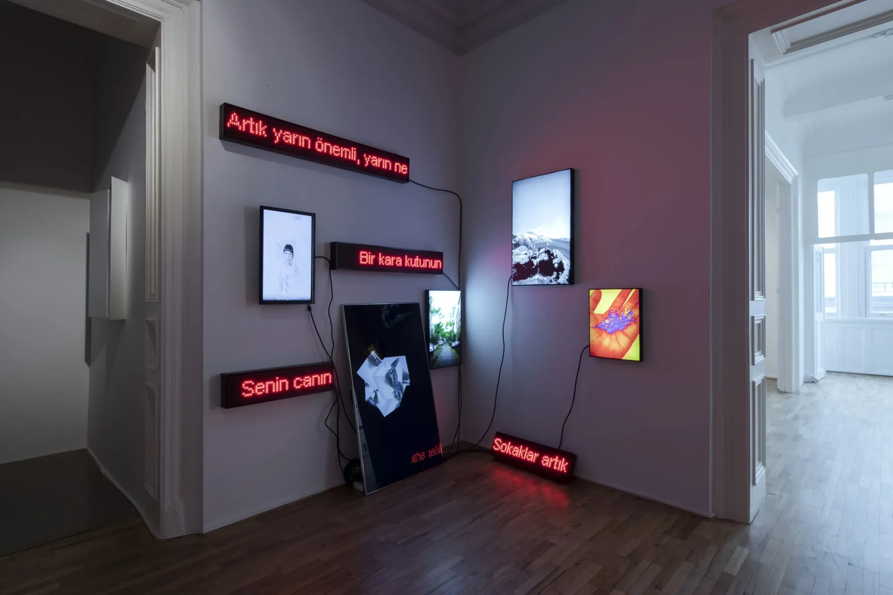
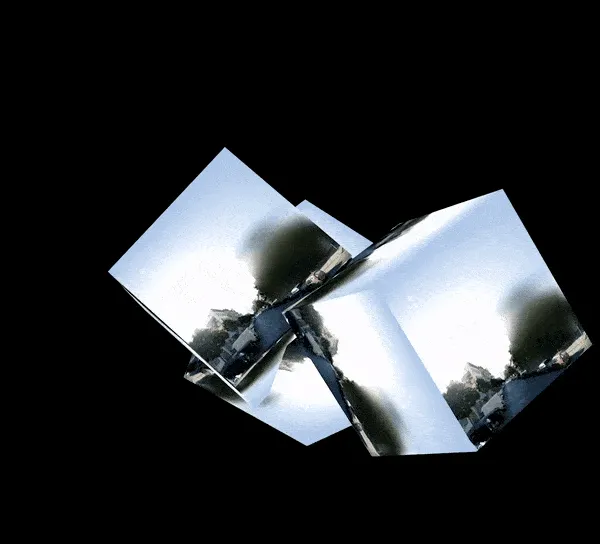
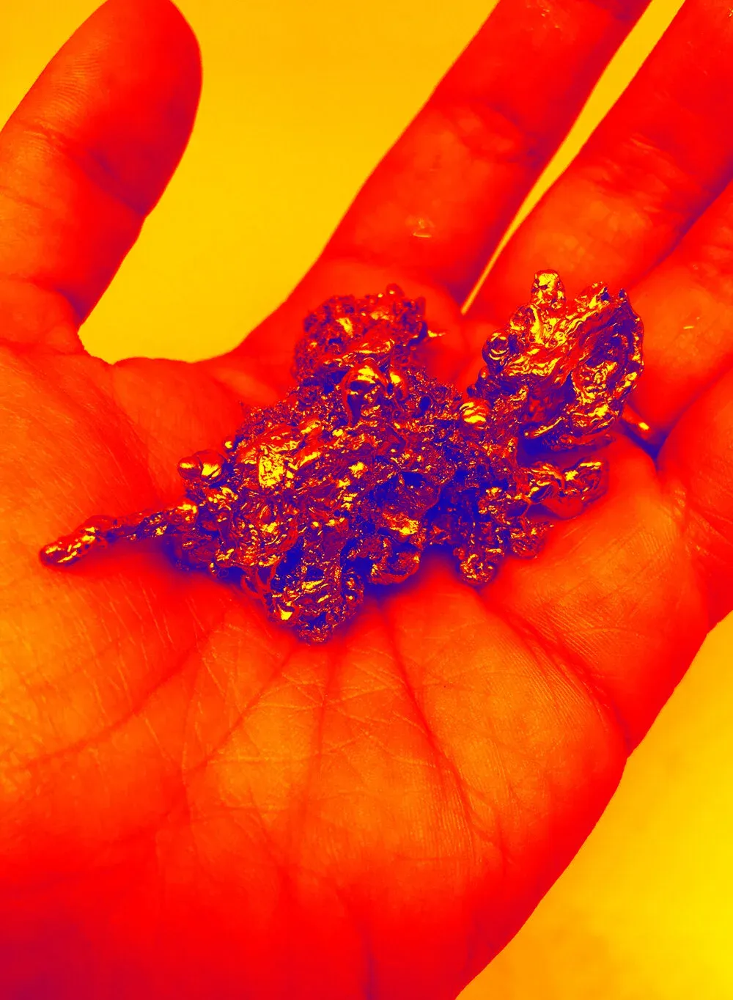

20052020
Fateful Serendipity
Installation- About
- Multimedia installation of narratives, images and object stories examining the spatial counterparts of location-based technologies.
- Links
- Original ↗





